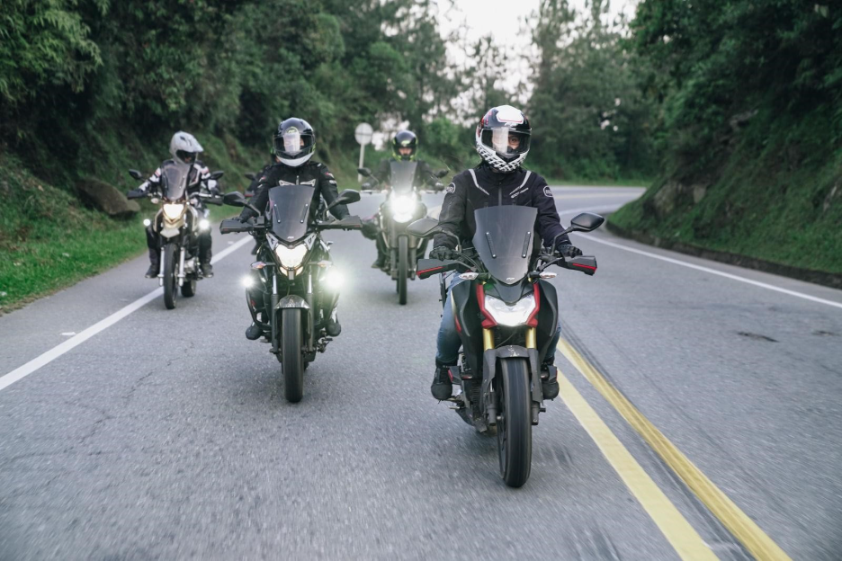
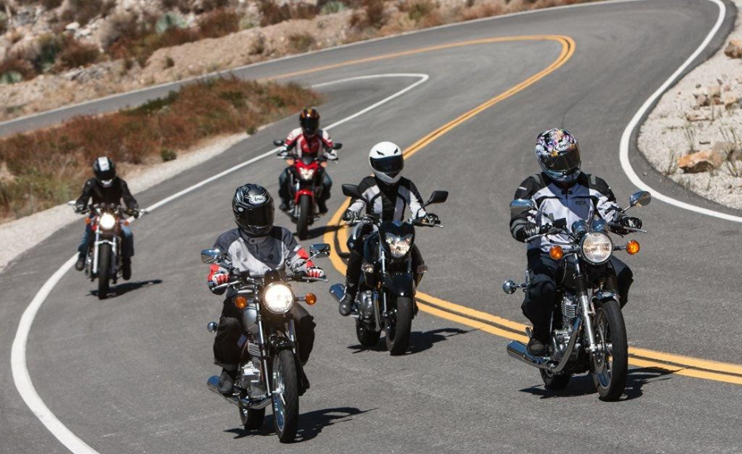
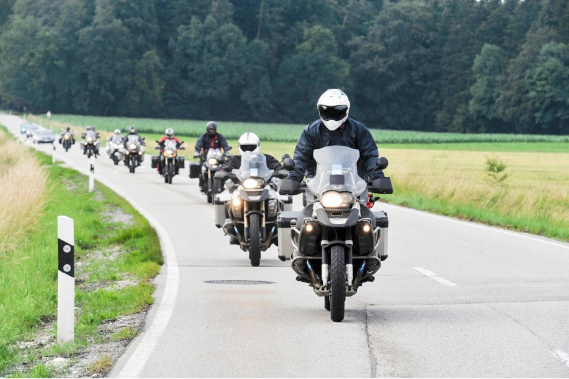

How to Organize a Group Ride without the Chaos
Description
Planning a motorcycle group ride? Learn how to organize routes, assign rider roles, communicate effectively, and use smart ride management apps like Rydyt to keep every ride safe, smooth, and enjoyable.
There's nothing quite like hitting the open road with a group of fellow riders. Whether it's a weekend breakfast ride, a scenic mountain escape, or a long-distance tour, group rides create lasting memories and strengthen the riding community. But without proper planning, even a short ride can quickly turn into missed turns, riders getting separated, communication breakdowns, and unnecessary delays.
The secret to a successful group ride isn't riding the fastest—it's staying organized, riding safely, and ensuring everyone enjoys the journey together.
Plan Before You Ride with Rydyt
A well-organized ride starts long before the engines fire up. Decide on the route, meeting point, fuel stops, rest breaks, and destination in advance. Sharing the complete itinerary with every participant ensures everyone knows where they're going and what to expect throughout the ride with Rydyt.
Before setting off, hold a short pre-ride briefing to discuss the riding pace, planned stops, communication methods, safety guidelines, and emergency procedures. Taking a few minutes to align with everyone at the start can prevent confusion later.
Assign Clear Riding Roles
Every successful group ride benefit from having designated responsibilities.
The lead rider sets the pace, follows the planned route, and alerts the group about upcoming turns, hazards, or scheduled stops. The sweep rider remains at the back of the group, ensuring no one gets left behind and assists riders if they experience mechanical issues or unexpected delays.
These simple roles improve coordination and help the group stay together without unnecessary interruptions.

Ride with Discipline and Courtesy
Safe riding habits are the foundation of every successful group ride. Maintain a safe following distance, avoid sudden lane changes, and ride at a pace that's comfortable for the entire group—not just the most experienced riders.
Traffic signals, roadworks, or heavy traffic may occasionally separate the group. Instead of speeding to catch up, regroup at predetermined meeting points where everyone can safely rejoin the ride. Respecting each rider's experience level creates a more relaxed, enjoyable, and safer ride for everyone.

Communicate Effectively Throughout the Ride
Clear communication keeps the ride running smoothly. Riders should know about upcoming fuel stops, rest breaks, route changes, and any unexpected road conditions as early as possible.
Simple hand signals or agreed communication methods help reduce confusion while riding. Consistent communication also minimizes unnecessary stops and keeps the group moving efficiently.
Stay Connected with Rydyt
Managing a group ride becomes much easier with Rydyt. Instead of switching between navigation apps, messaging platforms, and location sharing, Rydyt brings everything together in one place.
With features like route planning, ride invitations, live ride tracking, group location sharing, and rider communication, every participant stays informed throughout the journey. Whether you're organizing a ride with a few friends or coordinating a large touring group, Rydyt helps reduce confusion, improves coordination, and ensures no rider gets left behind.

Be Prepared for the Unexpected
Even the best-planned rides can face unexpected situations such as traffic delays, weather changes, or mechanical issues. Carry a basic toolkit, first-aid kit, tyre repair kit, and emergency contact information. Encourage every rider to start with a full fuel tank and ensure their motorcycle is in good condition before the ride begins. Being prepared allows the group to handle unexpected situations calmly without disrupting the entire journey.
Final Thoughts
A successful group ride is built on preparation, communication, and teamwork. Planning the route, assigning riding roles, maintaining safe riding practices, and keeping everyone connected can transform an ordinary ride into a smooth and memorable adventure.
Whether you're riding with a small group of friends or leading a large motorcycle tour, staying organized allows everyone to focus on what truly matters—enjoying the road together. With thoughtful planning and smart apps like Rydyt, every group ride becomes safer, more efficient, and far more enjoyable.
Invite. Ride. Track. Talk.
— The Rydyt Team